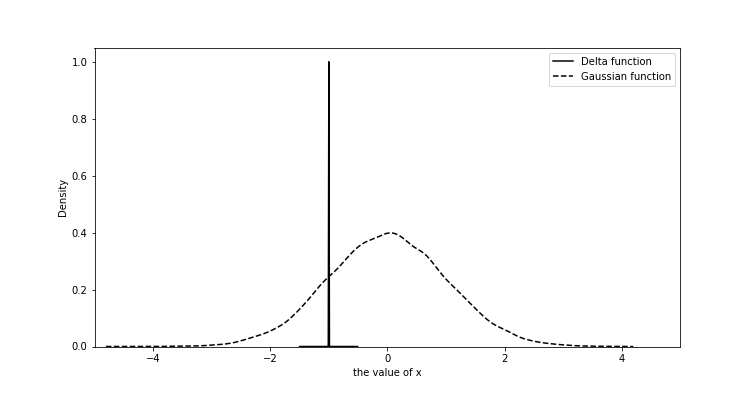
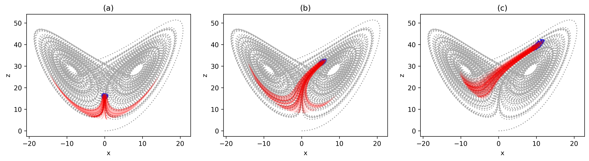
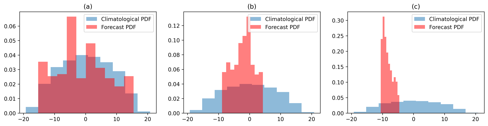

Week 1: Predictability of Weather and Climate#
This week we work through a few of the fundamental concepts of predictability, and see how they connect to statistics, differential equations and linear algebra. As you will see, the definition of predictability itself turns out to be remarkably straightforward.
Climatological distribution and forecast distribution#
When we say that something — call it \(x(t)\) — is predictable, we mean that we can track its time evolution to some useful degree. In most cases, however, our confidence in \(x(t)\) decreases as the forecast lead time (the time between the initial state and the forecast state) grows. It is therefore more natural to describe \(x(t)\) with a probability density function (PDF), \(p(x(t))\), since what we are really quantifying is how confident we are.
Consider two extreme cases. The first is \(t\rightarrow 0\). Here we know \(x(t)\) almost exactly, because it is simply the current state — the observation. Accordingly \(p(x(0))\) is very narrow, close to a delta function (FIG1, solid line). The second case is \(t\rightarrow \infty\). Here we have no useful information at all, so the best we can do is to draw randomly from the historical record (FIG1, dashed line) — in other words, to guess. Between \(t=0\) and \(t\rightarrow \infty\), then, \(p(x(t))\) evolves continuously from the first distribution into the second. These two limits deserve names: the distribution describing our confidence at a finite lead time is the forecast distribution, and the one approached as the lead time goes to infinity is the climatological distribution (in statistics, the population).

Fig. 1 An example of forecast probability density function and climatological probability density function.#
With this picture in place we can state a mathematical definition of the time of predictability limit: it is the moment at which the following null hypothesis can no longer be rejected.
(1) says that once \(p(x(t))\) has become statistically indistinguishable from \(p(x(\infty))\), we have reached the predictability limit — because at that point our best estimate is no better than a random guess. This is the sense in which predictability is, at bottom, a question of statistical testing.
You may also have noticed something else: nowhere in this discussion did we use the ground truth, i.e. the observed \(x(t)\). That is deliberate. Measuring predictability does not require observations at all; it depends only on the forecast states. This is the so-called perfect model assumption, which we will examine in more detail in Week 3.
State-dependent predictability and mathematical assumptions#
One striking fact about predictability is that it has no universal value. That may sound strange, even counter-intuitive, at first. After all, for typical numerical weather prediction we usually quote a predictability limit of roughly 10 days to 2 weeks, beyond which the model output can no longer be trusted. But “10 days to 2 weeks” is only a rule of thumb. In some situations we can already be struggling with low forecast confidence at a lead time of 3 days. To see how that comes about, let us turn to the famous Lorenz 63 model.
Note
The Lorenz 63 model [Lor63] is arguably the minimalist model for studying chaos and predictability: it contains only three prognostic variables. Three is in fact the minimum — a dynamical system with fewer than three independent variables cannot produce chaotic behaviour. We will return to the Lorenz model in Week 3.
(2) is the Lorenz 63 model, here with the parameters \(\rho=28\), \(\sigma=10\) and \(\beta=\frac{8}{3}\) — a choice that guarantees chaotic behaviour. (In the homework you will vary these parameters and watch the dynamical behaviour change.) We select three different initial states and generate ensemble simulations by perturbing the initial \(x\), \(y\) and \(z\) slightly. The results are shown in FIG2. In FIG2(a) the ensemble spread grows quickly and soon splits into two groups, roughly \(50\%\) going to the right and \(50\%\) to the left. In FIG2(b) the members stay close together at first and only bifurcate later. In FIG2(c) they remain close even at the end of the simulation, indicating a much smaller error growth rate.

Fig. 2 The three scenarios of ensemble forecasts based on L63 model (a) fast error growth (b) average error growth (c) slow error growth#
We can go one step further and plot the forecast PDF of the \(x\) component at the final time for each of the three scenarios; the result is shown in FIG3. For reference we also include the climatological PDF, obtained from a long simulation of 50,000 (non-dimensional) time steps. Recall that the predictability limit is defined by when we can no longer reject the null hypothesis in (1). Comparing how similar the two distributions are therefore tells us how predictable the system currently is. In FIG3 the forecast PDF in (a) is already very close to the climatological PDF, whereas in (b) and (c) the forecast PDFs remain clearly distinguishable from it — indicating that we have not yet reached the predictability limit.

Fig. 3 The final states’ probability density function of three ensemble forecast shown in Fig. 2#
Run this yourself in Google Colab
Both figures above are reproduced in a companion notebook that you can open and run with one click — no installation required, just a Google account:

The notebook uses only numpy and matplotlib, both of which Colab already provides, so nothing needs to be installed. Run the cells with Shift+Enter, then start changing things: the forecast lead time, the size of the initial perturbation, or the parameters \(\rho\), \(\sigma\) and \(\beta\). The exercises at the end of the notebook suggest where to begin.
The take-home message from FIG2 and FIG3 is that predictability is a function of the state, not a universal number. With that in mind it becomes much easier to see why even the most experienced forecasters and the most advanced NWP systems sometimes struggle — so be kind to them.
A few points are worth keeping in mind. First, we have considered only the uncertainty in the initial state, and have ignored uncertainty in the model structure (whether the model itself is correct) and rounding error. This perfect model assumption is one of the most important assumptions in this entire course — and arguably in the entire field — because it gives us the upper limit of predictability. It also tells us that as long as there is any infinitesimal error in the initial state, a predictability limit is inevitable. Second, predictability has no meaning unless ensemble simulations are used, since its definition rests on how quickly one ensemble member diverges from another. Third, rejecting the null hypothesis in (1) requires choosing a significance level, which leaves room for manipulation: one could always adopt a lenient level (say \(10\%\)) in order to claim that the predictability limit has not yet been reached. Stating clearly which threshold is used for the test is therefore essential.
Where do the uncertainties come from?#
At the end of the previous section we noted that forecast uncertainty can arise in three different places — or at least that any forecast uncertainty can be attributed to one of the three. In practice they occur simultaneously and are sometimes indistinguishable, but it is useful to examine them one at a time.
The first is initial-state error, or observational error. In a perfect observing system the spatial and temporal resolution would extend all the way down to the smallest scales (molecular scales). This matters because wherever observations are missing, the upscale growth of initial error from those regions will eventually render the future unpredictable — provided the underlying dynamics is chaotic.
The second source is imperfect model physics. Specifically, the physical parameterizations used to approximate the bulk effect of subgrid-scale processes (scales smaller than the model grid) are a major source of uncertainty. The details of parameterization belong to another course, so we will only walk through the main idea here. One reason parameterizations are used at all is limited computational power. To predict the evolution of an extratropical storm accurately, for instance, we also need to represent the convection embedded in its frontal structures, because the latent heat released by that convection is not negligible. Explicitly resolving those small-scale thunderstorms, however, is not computationally feasible for synoptic weather forecasting. Most NWP systems therefore use cumulus parameterizations to approximate the bulk effect of convective clouds. The reason this works is that the large-scale environment is usually in quasi-equilibrium with the small-scale convection — that is, coherence exists between them — so the net convective activity can be approximated from large-scale information alone. That quasi-equilibrium, however, holds only in a statistical sense: for a given large-scale state there is a whole distribution of possible subgrid-scale responses rather than a single value. Strictly, then, the subgrid-scale effect should be described by a PDF, i.e. by a stochastic parameterization. Although this seems necessary, it is not what most prevailing NWP systems do. The same problem arises in the other physical parameterizations, not only in the cumulus scheme.
The last source is rounding error. Compared with the first two, rounding error has by far the smallest impact on weather and climate prediction. Indeed, we can sometimes make a deliberate trade-off, tolerating some rounding error in exchange for reduced computational cost. This is possible precisely because the uncertainties from observations and model physics are so much larger (\(>\mathcal{O}(5)\)) than the uncertainty introduced by rounding. More details can be found in [HMPDuben20], and on the lead author Sam Hatfield’s website (link).
Note
Lorenz 96 [Lor96] is one of the simplest models that attempts to address the underpinning theory of subgrid-scale processes. We will discuss it in more detail in Week 4.
Introduction to ensemble forecast in weather and climate#
From the discussion above we have established two things: (1) ensemble forecasting is essential to any discussion of predictability, and (2) the predictability limit is state-dependent. We justified both using the Lorenz 63 model. Let us now try to express both in a single formula. We begin by writing the prognostic equations in a more general form.
where \(\mathbf{X}\) is the state vector (i.e. \([x,y,z]\)) and \(F\) is a nonlinear operator. Assuming that the initial uncertainty is small and that \(F\) is differentiable, (3) leads to (4) and (5).
and
(4) is the tangent-linear form of (3), and \(\mathbf{M}(t,t_0)\) in (5) is a propagator operator (with \(\frac{dF}{d\mathbf{X}}\) the Jacobian matrix) that maps the initial perturbation \(\delta\mathbf{X}(t_0)\) to the final perturbation \(\delta\mathbf{X}(t)\). Crucially, \(\mathbf{M}(t,t_0)\) depends on both \(t\) and \(t_0\). That means the evolution of \(\delta\mathbf{X}(t)\) is determined not only by where \(\mathbf{X}\) starts, but also by the trajectory it has taken — which is precisely fact (2) above.
Inspecting (5), we see that the initial error (i.e. the difference between ensemble members) will grow rapidly whenever \(\int_{t_0}^{t} \frac{dF}{d\mathbf{X}} dt'>0\). An alternative way to describe the same phenomenon is through the prognostic equation for the forecast PDF:
where \(\rho(\mathbf{X},t)\) is the forecast PDF at a given \(\mathbf{X}\) and \(t\), and \(\mathrm{det}{(\mathbf{M}(t,t_0))}\) is the determinant of \(\mathbf{M}(t,t_0)\). Mathematically, a determinant tells us how the area spanned by the vectors \(\delta\mathbf{X}\) is scaled by a linear transformation. (We will say more about this in Weeks 3–6; see also the excellent video by 3Blue1Brown!)
A simple example is
Here \(\mathrm{det}{(\begin{bmatrix} 1 & 0 \\ 0 & 2 \end{bmatrix})}\) equals 2, indicating that the area spanned by \(\begin{bmatrix} 1 & 0 \\ 0 & 1 \end{bmatrix}\) is scaled by a factor of 2 under the transformation. By the same reasoning, (5) tells us that the area spanned by \(\delta\mathbf{X}\) grows by a factor of \(\mathbf{M}(t,t_0)\), so the ensemble density \(\rho(\mathbf{X},t)\) must decrease by the same factor, since the total number of ensemble members is conserved. That is exactly (6). This makes (6) a powerful result — it predicts the forecast PDF — and you will meet it repeatedly in the weeks ahead.
That leaves one question. If we want to generate a reliable ensemble forecast, which initial states \(\mathbf{X}\) should we use? In practice we want an ensemble that covers as many plausible scenarios as possible, so the most informative initial states are usually those with the largest error growth rate. On the other hand, a high error growth rate also implies low forecast confidence. Striking a balance between the two is an important topic in Data Assimilation.
References#
Sam Hatfield, Andrew McRae, Tim Palmer, and Peter Düben. Single-precision in the tangent-linear and adjoint models of incremental 4d-var. Monthly Weather Review, 148(4):1541–1552, 2020.
Edward N Lorenz. Deterministic nonperiodic flow. Journal of atmospheric sciences, 20(2):130–141, 1963.
Edward N Lorenz. Predictability: a problem partly solved. In Proc. Seminar on predictability, volume 1. 1996.